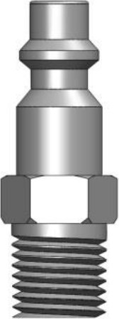
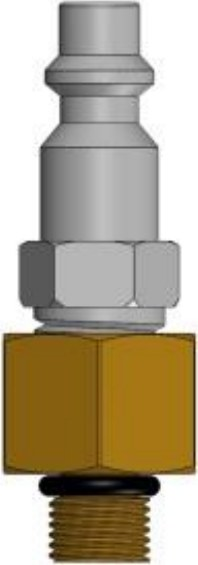

Doc no. MOC-TSB-13-22 // Vol. 13 No. 22 // Jul 29, 2013 // Transmission
Ford 5R55 Transmission Adapters
New9479294787
MOC has developed a new transmission adapter to be used on the Ford 5R55W transmissions. This new adapter is Part No. 94792 and connects to the fill port on these transmissions. It is used with the existing adapter Part No. 94787 which connects to the test port.
What's new
**One of the 90 degree Intermediate Transmission Lines (Part No. 94855) is recommended to connect to the Pressure Port adapter.
2004 Ford transmissions 2004 thru 2006 Lincoln Explorer – 5R55 Aviator 4.6L – 5R55 Thunderbird 3.9L – 5R55 LS 3.0L & 3.9L – 5R55
Contact
For more information, contact the Machine & Equipment Department at 866.244.6621.


Known to fit
| Group | Vehicle |
|---|---|
| 2010 Ford transmissions | Explorer 4.0L – 5R55 |
| 2010 Ford transmissions | Explorer Sport Trac 4.0L – 5R55 |
| 2010 Ford transmissions | Mustang 4.0L & 4.6L – 5R55 |
| 2009 Ford transmissions | Explorer 4.0L – 5R55 |
| 2009 Ford transmissions | Explorer Sport Trac 4.0L – 5R55 |
| 2009 Ford transmissions | Mustang 4.0L & 4.6L – 5R55 |
Part numbers
| Part No. | Description | Notes |
|---|---|---|
| 94792 | Adapter, 1/4" QD Plug x 1/8" MPT | |
| 94787 | Adapter, ATF, Ford Pressure Port | |
| 94855 | 90 degree Intermediate Transmission Lines |